Demo 2.2: Sending messages from Linux using Node.js
Objectives
Show how a Linux device can connection to the same backend solution and send messages.
Requirements
An active Azure subscription. If you don’t have an account, you can create a free trial account in just a couple of minutes. For details, see http://azure.microsoft.com/pricing/free-trial/
Setup
You need the Remote Monitoring solution still running that you set up for Demo 2.1.
If you’re running Windows, download PuTTY from http://www.chiark.greenend.org.uk/~sgtatham/putty/download.html and unzip the file. We will use PuTTY.exe to connect to the Linux virtual machine shortly.
Find the Solutions folder for this presentation, then the Demo 2.2 folder, and the file mydevice.js. You’ll need this file.
Create the Linux VM
If you’re doing your presentation from a Linux PC then you can skip to Install NPM. If you are running Windows then you’ll create a Linux VM in Azure as follows.
Head to the Azure portal, click on the new button in the left-side menu and type Ubuntu. Press Enter.
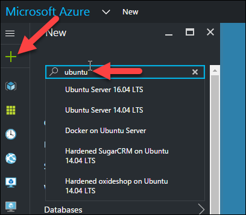
Choose one of the Ubuntu servers and click on the Create button.
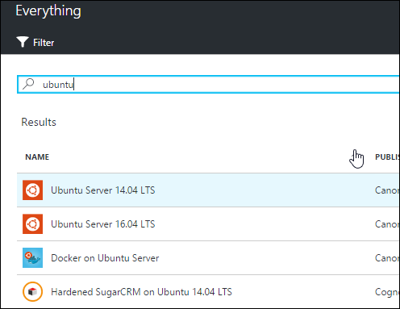
Enter a unique virtual machine name, select HDD as the disk type, enter an admin user name and password, select your subscription and resource group. Click on the Create button.
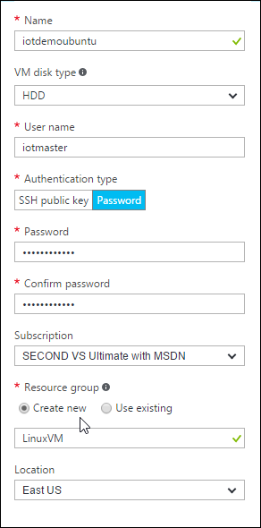
When prompted for a pricing tier, select A1 Basic.

Click OK to create the VM. This will take a few minutes.
Connect to the VM using PuTTY
Locate the folder where you unzipped the PuTTY zip file and double-click on putty.exe
Locate the virtual machine IP address in the Azure portal and type it in PuTTY.
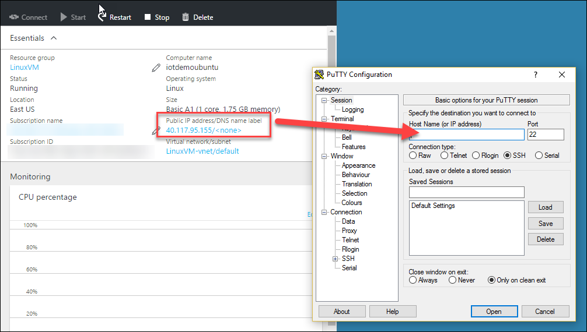
Click Open.
If you get the prompt from PuTTY, click Yes.

You’ll be prompted for your user name and password.
You’re now connected to your Ubuntu virtual machine.
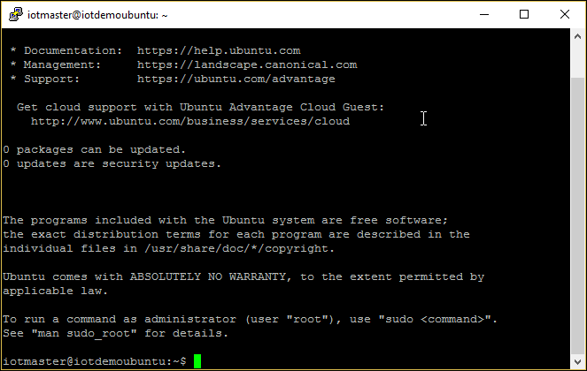
Install NPM
You now need to install NPM and the Azure Node module. Type the following:
sudo apt-get update
sudo apt-get install npm
sudo npm install -g npm@latest
sudo ln -s /usr/bin/nodejs /usr/bin/node
Install the Azure Node packages:
sudo npm install -g azure-iot-device@latest
sudo npm install -g azure-iot-device-amqp@latest
Demo Steps
In this demo, you’ll explain how to send messages using Node on a Linux virtual machine.
Let’s new create a new device.
Head to the Remote Monitoring Web site that you setup in Demo 2.1. Click on the Devices button in the left-side menu and Add a Device at the bottom of the menu.

Create a Custom device.
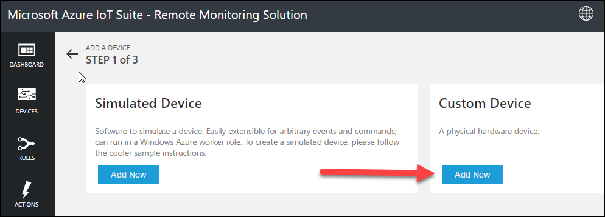
Select Let me define my own Device ID and type a unique name. Click the Check ID button to validate that the name is unique then click Create.
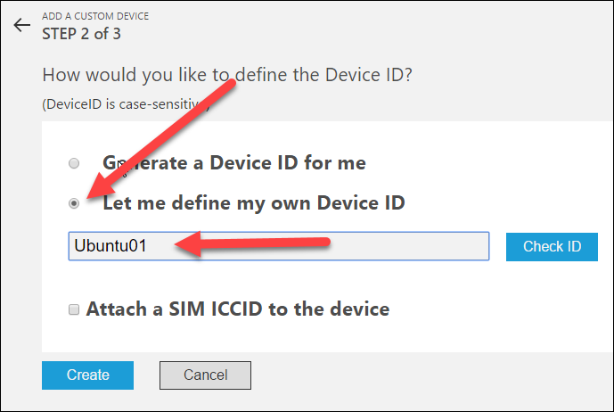
Select the newly created device and click on the Enable Device link in the right-side menu.
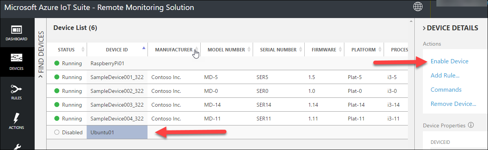
Head to the Azure portal, select the resource group for the Remote Monitoring solution and select the IoT Hub from the services list.
Click on the Devices button and select the new device.
Copy the device connection string.
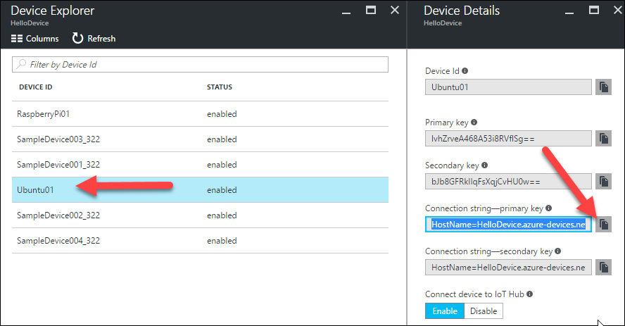
Setup demo code
You now need to copy the code.
On your Windows machine, open mydevice.js with Notepad the copy all the code
Locate the connectionString and paste the value you copied earlier.
Copy the whole code to the clipboard.
In the Ubuntu console, launch the VIM editor by typing: vim mydevice.js
Inside the console, right-click with your mouse, this will paste the code you copying earlier.
Press the Escape key.
Type :wq! (yes, that’s a colon followed by w q and an exclamation mark)
You’re back at the command prompt.
At the command prompt type: node mydevice.js
The device is now sending telemetry to IoT Hub.
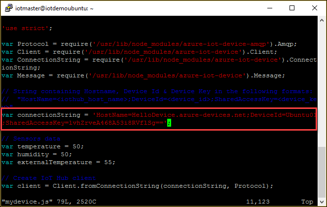
Head to the Remote Monitoring Web site, select the new device from the dropdown menu. The graph will display the telemetry.
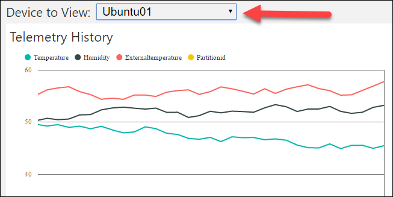
Press Control-C in the Ubuntu command prompt window to stop the node script.
This completes this demo.
Teardown
You should go to the Azure portal and delete the Linux VM you used. You will still need the Remote Monitoring solution (and the parts listed in the Azure portal) for other demos so don’t delete that stuff yet.